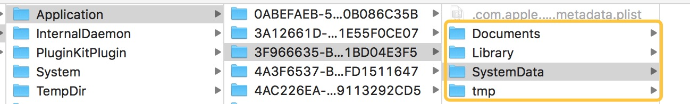

理解持久化存储
先到存储（storage），我就想起自己16G的内存真的弱爆了，下载一个应用前先思考毙掉哪个？
从硬件角度考虑：
手机内存分为 DRAM运行内存 和 flash闪存
DRAM（Dynamic Random Access Memory）：如果正儿八经翻译，就是“动态随机存取储存器”，有动态Dynamic的，当然有静态Static的。总而言之，都是RAM。
从原理上来说，RAM这种半导体存储器利用电容内存存储电荷数量来表示 0, 1。现实中电容有漏电的现象，这会导致电位差不足使数据丢失。
flash：平常用的最多的就是闪存，书面上说是非易失性，在我这菜鸟理解就是具有持久化。
所以，持久化的数据就储存在闪存，持久化的表现就是应用关闭重启后，可以从闪存中取出之前保存的数据。
从软件的角度：
苹果采用了沙盒（SandBox）这种安全机制，为运行的程序提供了隔离环境。
沙盒的设计指南参考 [App Sandbox Design Guide][1]，沙盒的概念也并非苹果专有的。
打开沙盒会发现下图目录：

NSUserDafault以plsit文件存储在沙盒中。属性列表（plsit文件）适合存储小于几百千字节的少量持久数据的情况，为存储和访问数据提供了统一且独立的方式。
plist文件参考 [Property List官方解释][2]
NSUserDefault用法
支持数据类型：NSData NSString NSNumber NSArray NSDictionary, 其他类型比如图像只能转化NSData。NSArray 和 NSDictionary 也只能存储这五种类型。
其实，从支持的存储类型看，就知道NSUserDefault支持“小而精”类型的数据，存储应用程序的用户偏好参数。
NSUserDefault 是采用了KVC代码形式，存取值都很简单便捷。
这里看几个不太熟悉的方法：
- (void)registerDefaults:(NSDictionary
*)registrationDictionary
使用这个方法会发现在plist文件中找不到key-value，也就是说不会持久化存储，不会把值写入闪存。这个方法只是在应用运行时起作用，也就是说只在当前应用生命周期有用，作为一种全局化的临时存储区，官方把这个临时区包装起来叫 registration domain 这个名字。
由此可知：
读取key值（比如stringForKey方法）会先从plist文件中读取，如果没有就从全局临时存储区寻找。
> - (nullable instancetype)initWithSuiteName:(nullable NSString *)suitename
这个方法主要和 App Groups配合使用，在一组App间共享偏好设置数据。所以sutiname起名要不同于App的bundle identifier，同时不能起名为NSGlobalDomain。
App Group配置好以后，就可以使用:
注意：suitename参数为nil时，效果和standardUserDefaults方法一样，会生成一个bundle identifier前缀的plist文件。
### 解刨NSUserDefaults
[NSUserDefaults官方文档][3]开篇有一段：
> At runtime, you use NSUserDefaults objects to read the defaults that your app uses from a user’s defaults database. NSUserDefaults caches the information to avoid having to open the user’s defaults database each time you need a default value. When you set a default value, it’s changed synchronously within your process, and asynchronously to persistent storage and other processes.
直接翻译过来上文说NSUserDefaults缓存了数据，避免每次打开用户默认数据。当设置默认值时，同步改变，异步持久化存储。
这个透漏了两点：
- NSUserDefaults 不是直接就把值存入plist文件
- NSUserDefaults 会缓存数据，而不是每次从plist文件读取
UserDefaults设置数据时，不是立即写入，而是根据时间戳定时地把缓存中的数据写入闪存中。我试了一下，有时候运行完程序，立即打开plist文件，会发现有的数据还没有，等一会儿就又出现了。其实就是内存和闪存之间UserDefaults内部在作怪，UserDefaults既做了缓存处理，也异步周期性做了持久化处理。
UserDefaults有一个域（Domain）的概念，作为一个存储类怎么如此复杂？
在registerDefaults方法中有一个registration domain 的域，我就觉得奇怪。
最后才知道：初始化UserDefaults，默认有 5 个域
NSArgumentDomain 命令行参数，应用启动时值就存在
Application 本应用中的值，持久化存储
NSGlobalDomain 所有应用都会用到的值，会共享
Languages 本应用用到的语言设置，用在国际化
NSRegistrationDomain 注册域，不会持久化存储，每次应用启动时都会调用
从上到下，依次搜索值，plist在Application中，这个时候就理解了 例子1 。
看来UserDefaults采用了分层的设计，不简单啊。
这其中如果不考虑分层的设计，单单考虑Application 域层，需要一个缓存的机制，其次周期性写入plist文件，接口采用KVC的形式，key-value便于理解和记忆。
感谢
LeeHu的博客 [探究NSUserDefaults][4]
*Swift Cafe [NSUserDefaults - 熟悉与陌生][5]
[1]: https://developer.apple.com/library/content/documentation/Security/Conceptual/AppSandboxDesignGuide/DesigningYourSandbox/DesigningYourSandbox.html#//apple_ref/doc/uid/TP40011183-CH4-SW6
[2]: https://developer.apple.com/library/content/documentation/CoreFoundation/Conceptual/CFPropertyLists
[3]: https://developer.apple.com/documentation/foundation/nsuserdefaults?language=objc
[4]: http://muscliy.github.io/2015/07/03/%E6%8E%A2%E7%A9%B6NSUserDefaults/
[5]: http://swiftcafe.io/2016/04/04/nsuserdefaults